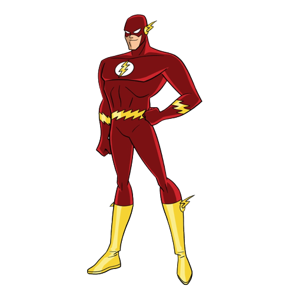

Three men have held the title of "The Fastest Man Alive": Jay Garrick, Barry Allen and Wally West. Jay Garrick acquired his super-speed abilities in a random lab accident and became the first to go by the name the Flash. Years later, Jay was succeeded by police scientist Barry Allen, until his former kid partner Wally West took up the mantle when Barry was dead. But, when Barry returned, he became the Flash once again.
